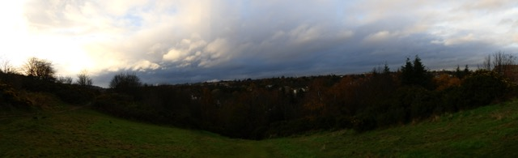
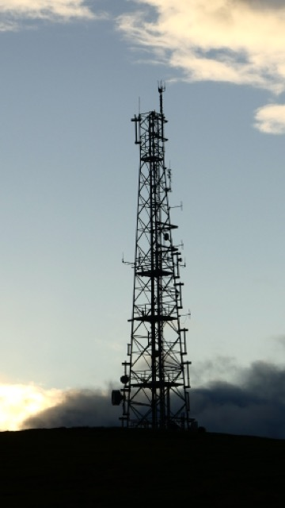
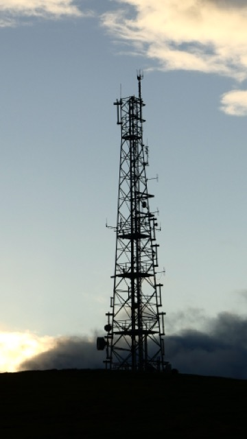
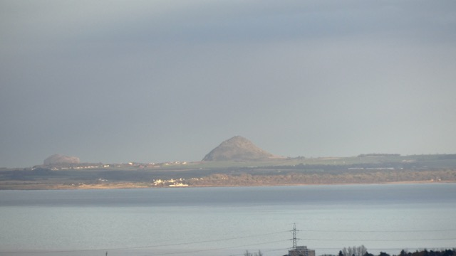
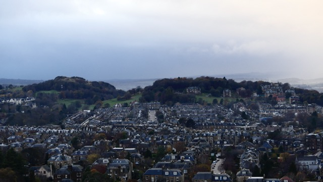
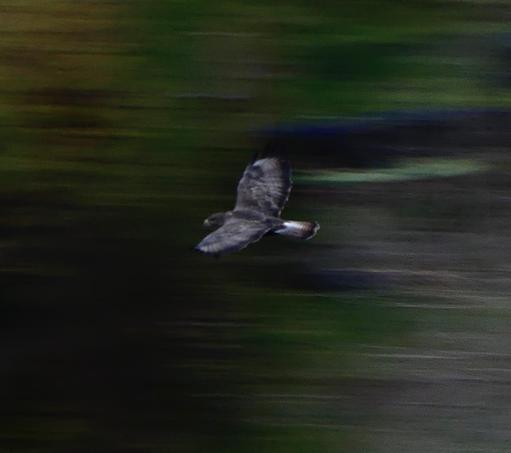
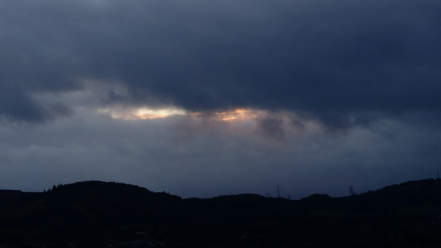
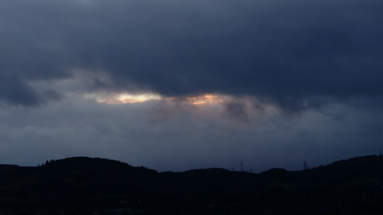

The Western sky looked a little threatening as I walked through the gates of Blackford park in Edinburgh. I was unsure as to whether I'd make it through without having to break out the big waterproof coat I take everywhere. It was about quarter past three in the afternoon as I started walking up the foot of the small hill, and sunset was set for exactly 16:00. The wooded area which shrouds the foot was now in its late autumnal bloom, with the last few leaves clinging on to the trees, and the path awash with different shades of yellow and brown. It had been raining earlier so there was quite a bit of mush underfoot too, though nothing which a good pair of shoes couldn't handle.
As I emerged out onto the grass slope of the hill itself, I turned around to look at the surprisingly already good view over the city. Blackford is located in South Edinburgh, and you can see all the way round from Corstorphine hill to the coast at North Berwick. It is a truly panoramic view. I was climbing the North side of the hill, so my view to the South-West was obscured, though I hoped the sun would be rather impressive as I neared the top. It was still pretty much daylight at this point, and Arthur's Seat, seen to the North-East of my position, was beautifully illuminated.
 As I reached the top of the hill, I could see the top of the transmitter tower which sits atop Blackford hill poking out above the foliage. Originally a BT Microwave site from 1951, Blackford originally linked Blackcastle Hill near Dunbar and Kirk O'Shots on the way to Glasgow. The original tower has now been replaced with this, typical of early emergency services wireless towers, though it appears to be used now mostly for assigned business radio, direction finding, and the occasional microwave link. 
Beyond the transmitter sits Braid hill (itself home to a DAB station), which opens out into the Pentlands. If you look in just the right direction, you could almost forget you are in Edinburgh. Similarly, Corstorphine hill is quite a prominent feature of the landscape. Originally I had wanted to go up it today in fact, though on balance, I am rather glad I made the decision not to as it was certainly better to be seen from a distance. I suspect the view would have been rather obscured by the cloud cover, but when seen from Blackford hill, it looks rather magical.
As I reached the top of the hill, I could see the top of the transmitter tower which sits atop Blackford hill poking out above the foliage. Originally a BT Microwave site from 1951, Blackford originally linked Blackcastle Hill near Dunbar and Kirk O'Shots on the way to Glasgow. The original tower has now been replaced with this, typical of early emergency services wireless towers, though it appears to be used now mostly for assigned business radio, direction finding, and the occasional microwave link. 
Beyond the transmitter sits Braid hill (itself home to a DAB station), which opens out into the Pentlands. If you look in just the right direction, you could almost forget you are in Edinburgh. Similarly, Corstorphine hill is quite a prominent feature of the landscape. Originally I had wanted to go up it today in fact, though on balance, I am rather glad I made the decision not to as it was certainly better to be seen from a distance. I suspect the view would have been rather obscured by the cloud cover, but when seen from Blackford hill, it looks rather magical.

From the summit, looking vaugely East, you can see rather a long way. North Berwick sits approximately twenty miles out, though with a good lens, you can quite easily get a photo. 
The skies were clear, and this was the point where I first noticed the lack of wind. I have been up Blackford hill many times and it is often rather windy when standing on the top, however this time it seemed conspicuously absent. I decided to proceed down on to one of the ledges of the hill. It was a lot more private as compared to the summit, which was populous with dog walkers.
 From here I was overlooking Craiglockhart hill(s), which stand to the West of Blackford. They're rather picturesque and at some point I endeavour to try and get up them. It was getting a lot darker a lot quicker at this point, so I was unable to get a good photo of the house on Craiglockhart hill using the zoom lens. However, as I stood looking out and waiting patiently for the sun to go down, I noticed a large bird being mobbed by what looked like crows. I decided to get the camera out once again and aimed it right down the hill. Because of the lighting conditions, the bird was moving to fast to get a clear photo, but I found that if I moved the camera at just the right speed I was able to correct for this and get the subject to focus up, rather than the background.

Well fancy that! The Blackford Buzzard, no doubt out looking for some tea. I was rather chuffed with this spot as all my other attempts were rather blurry. Eventually the buzzard landed in a tree tucked away under the hill. The sun was well and truly set by this point, as I ascended back up to the now much less busy trig point at the peak. I decided to take a few more photos before returning back to the park whilst I could still see!

 
